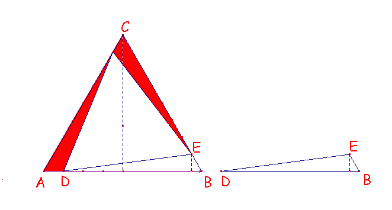
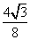
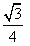
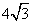
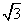
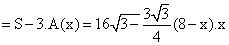
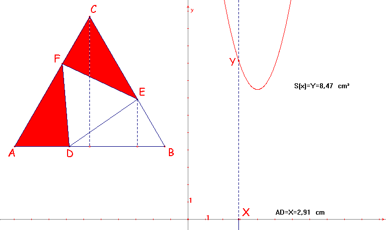

Problema 62.-
Inscribir en un triángulo equilátero de lado 8 cm otro triángulo equilátero.
Calcular el área del inscrito en los casos en que el vértice del inscrito disten del dado en 1 cm, 2 cm, ... 7 cm. ¿Cómo varía esta área?, ¿Cuál es el triángulo inscrito de área mínima?. Trazar el gráfico.
Sol:
Por la propia construcción del triángulo inscrito en el triángulo equilátero original, el nuevo triángulo también es equilátero. Por tanto los dos triángulos son semejantes y sus áreas están relacionadas como el cuadrado de su razón semejanza. De esta manera vamos a calcular según tabla las áreas de los distintos triángulos así construidos.
|
 |
Contestemos a las dos cuestiones planteadas.
¿Cuál es el triángulo inscrito de área mínima?
Por la simetría central de orden 3 que tiene la construcción, observamos que cuanto mayor sean los triángulos sombreados de rojo menor será el área del inscrito. El valor máximo se alcanzará justo cuando lo sea la expresión algebraica que calcula el área de uno de esos triángulos.
Y esa expresión no es otra que A(x)= 1/2× (8-x)

× x =
(8- x)× x , donde x =AD.El valor máximo de A(x) se alcanza para x= 4 ya que para otro valor menor que 4 se obtendría que x= 4- k, siendo k£ 4 y, por tanto sustituyendo:
A(x) = (4+k )× (4- k)= (16- k2)= × 16- k2 = A(4) - k2 £ A(4)
¿Cómo varía esta área?,
Como quiera que S = 1/2× (Base× Altura)× u2= 1/2× (8×

)u2= 16
× u2 » 27,7128129 u2.|
x |
S(x) |
|
1 |
18,6195462 |
|
2 |
12,1243557 |
|
3 |
8,22724134 |
|
4 |
6,92820323 |
|
5 |
8,22724134 |
|
6 |
12,1243557 |
|
7 |
18,6195462 |
|
8 |
27,7128129 |
donde S(x)


Solución de F. Damián Aranda Ballesteros
profesor de Matemáticas del IES Blas Infante en Córdoba